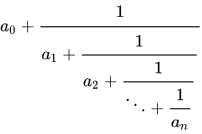

In simple terms, continued fractions are a way of representing real numbers. In the case of this project, I went with simple continued fraction which are fractions of the form:
 Equivalently we could represent the fraction as the sequence [a
0,a
1,a
2,...].
The representation below uses the latter representation to generate the images. The algorithm to draw the image is as follows.
Let A = [a
0,a
1,a
2,...] which represents the number n as a simple continued fraction. We begin drawing at (x,y) = (0,0).
We then consider the i
th term: if i(mod 4) = 0 we draw a red line from (x,y) to (x+a
i,y),if i(mod 4) = 1 we draw a green line from (x,y) to (x,y-a
i),if i(mod 4) = 2 we draw a blue line from (x,y) to (x-a
i,y),if i(mod 4) = 3 we draw a orange line from (x,y) to (x,y+a
i).
In the ideal case, the patterns that are generated would be perfect but due to computational constraints of JavaScript, ther is some amount of error on each computation - therefore for the best results input the simple continued fraction as a list at the bottom or click one of the buttons of irrational numbers (which are precomputed up to 100 convergent terms).
I do not claim to know everything about continued fractions but the little I do know I understood from
this paper and the
Wikipedia on the subject (Wikipedia is also where I got the image above).
If you have any suggestions or questions about what I did, feel free to email me at
drmiguel@mit.edu.